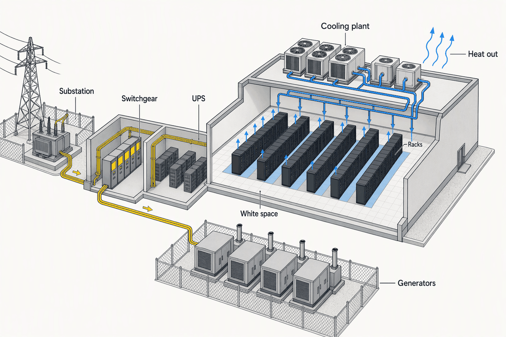
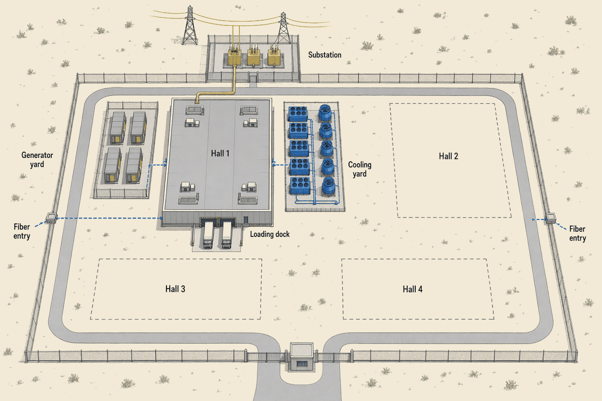

Foundations (second-opinion rewrite, preview)
Preview. This is a second-opinion rewrite of the Topic 1 chapter generated by gpt-6-sol on 2026-09-26 for review. It is not the course text. The current chapter is Foundations, delivery models and project economics; deep detail and sources: the appendix.
Imagine a rack, a cabinet of computing equipment. Its servers need reliable electricity, a network connection and a way to shed heat. A data center supplies those services continuously. We describe its size by information technology (IT) load, the power used by servers, storage and networking, not by the whole building. A kilowatt (kW) measures power; 1,000 kW equal one megawatt (MW). Power usage effectiveness (PUE) is total facility power divided by IT power. At 40 MW IT and PUE 1.4, the finished site needs about 56 MW at full design load. Follow that power from rack to grid, then see who must deliver it and who pays.
Size the reference campus
Our example is a 1,000-rack campus outside a hot United States city such as Phoenix or Dallas. It is colocation: an operator rents space, power and cooling to customers who bring their own computing equipment. Retail colocation serves smaller customers by rack; wholesale colocation leases large blocks. The planned 40 MW IT is for all four halls, built in roughly 10 MW phases, not for Hall 1 alone. These figures describe the completed campus at full design load.
- 1,000Racks across four hallsCabinets for tenants' computing equipment
- 40 MWPlanned IT loadRack schedule totals 38.9 MW, rounded for planning
- 56 MWModelled power at the fence40 MW × PUE 1.4, not Hall 1 alone
- 4Roughly 10 MW hall phasesOpen and equip capacity in steps
- $400–500 millionIllustrative full-campus buildExcludes tenants' computers
- About $65 millionIllustrative annual facility spendingAssumes full load and includes electricity
A rack's density is its electrical demand. Artificial intelligence (AI) pods group powerful processors and usually need liquid cooling, which carries heat in circulating fluid rather than only moving cooled air. The mix below adds to 38.9 MW; this course rounds it to 40 MW for design and cost calculations.
- 300 racks at 8 kW each2.4 MWLower-density customer racks
- 300 racks at 15 kW each4.5 MWMid-density customer racks
- 200 racks at 40 kW each8.0 MWHigh-density customer racks
- 200 racks at 120 kW each24.0 MWLiquid-cooled AI pods
Takeaway: One in five racks is an AI pod, yet that group draws more than half the IT power. For definitions, see the companion appendix, APX-foundations §1.
Capacity is not floor area
- A rack unit (U) measures cabinet height: 1U is 1.75 inches, and a common rack holds about 42U. Height alone says little about its electrical demand.
- Critical load means loads protected by backup power, typically including computing and essential cooling. Facility load includes IT, cooling, electrical losses and other uses. See APX-foundations §1 and APX-foundations §2.
Follow power through one hall
Now zoom into one hall. The utility supplies electricity from the grid, the shared power network. At the substation, transformers change voltage; switchgear routes or isolates circuits. An uninterruptible power supply (UPS) bridges an interruption until backup generators start. Racks sit in white space, the computing floor. Support rooms and yards are gray space. A cooling plant carries the racks' heat outside.

The cutaway is one hall; this power budget is for all four halls at full design load. Nearly all electricity used by the computing equipment ultimately becomes heat that must be removed.
- IT equipment40 MWServers, storage and networking
- Cooling and other facility uses16 MWCooling, electrical losses, lighting and controls
Takeaway: The extra 16 MW supports the facility, not more computation. Generators are a backup source, not another stop on the ordinary grid route (APX-foundations §2).
Why another facility's split may look different
- An industry illustration at 100 MW total and PUE 1.54 has about 65 MW IT, 27 MW cooling and 8 MW losses and other uses. That is not the split for this PUE 1.4 campus.
- N means exactly enough equipment to carry a required load. N+1 adds a spare unit; 2N provides a second independent full path. Those counts alone do not prove that the entire site is maintainable. A power distribution unit (PDU) distributes protected power to circuits near the racks. See APX-foundations §2.
Match the business model to a phased site
An enterprise data center is owned and used by one company. Colocation instead serves tenants. A hyperscale operator runs very large cloud or platform facilities and may build its own or lease wholesale space. A powered shell supplies a building and utility capacity, leaving the tenant to install the interior power and cooling systems. Edge describes a smaller site close to users, not a particular owner.
| Type | Building owner | Computer owner | What is provided |
|---|---|---|---|
| Enterprise | User company | Same company | Internal service |
| Retail colocation | Provider | Several tenants | Racks and power |
| Wholesale colocation | Provider | Tenants | Large blocks or halls |
| Powered shell | Provider | Tenant | Shell and utility capacity |
| Hyperscale | Operator or landlord | Cloud operator | Own facility or large lease |
| Edge | Varies | Varies | Nearby computing |
Our reference is finished colocation, not a powered shell. Its owner can add halls as customers commit. A fiber-optic connection carries data; two separate entries give alternative routes. The plan shows Hall 1 built and three future hall positions reserved.

Takeaway: A dashed hall is future space, not delivered power. Reserve land and routes early; buy much of each hall's equipment as its phase proceeds (APX-foundations §1; APX-foundations §4).
Labels that can overlap
A hyperscale company can lease a wholesale colocation hall. An AI-focused campus describes a workload and cooling need. Modular or prefabricated describes equipment made in a factory for assembly on site, not a facility ownership type. See APX-foundations §1.
Why power starts the clock
Ready-to-lease space was scarce in 2025, but demand cannot switch on an unconnected hall. Vacancy is completed rental capacity still unleased; preleased capacity is committed before opening. Commercial-property firm Coldwell Banker Richard Ellis (CBRE) reports the first two figures below. The third measures a different, global population.
- 1.4%Vacant capacity in primary North American markets, end-2025CBRE; little completed space available
- 74.3%Capacity under construction already committed, first half of 2025CBRE; leased does not mean operating
- 48%World data-center capacity at hyperscale operators, late 2025Synergy Research Group; not a share of new demand
Takeaway: A tenant commitment is not a grid connection. Grid interconnection is the utility agreement and physical work needed to supply a site. Long-lead equipment takes much longer to manufacture than to install. Redundancy adds spare capacity or paths so planned work need not stop service. Commissioning is structured testing of installed systems before opening. These activities overlap, so do not add the following durations.
- Business case and site choice3–9 monthsDemand, budget and land options
- Land and approvals6–24+ monthsSite rights and permits
- Grid interconnection4+ years in constrained markets, overlappingUtility supply and connection
- Design and long-lead orders6–12 months for design; transformers may take 160+ weeksCooling, redundancy and factory slots
- Construction by phase12–24 months for major constructionInstalled halls and equipment
- Commissioning and handover2–6 months, overlapping constructionTested service before tenants move in
- Operations and renewal15–20+ yearsRunning costs and equipment refresh
- Retirement or reuseAfter operating lifeRemove gear or repurpose the site
Takeaway: Decide the full-campus power allowance and cooling for 120 kW pods early. The Tier III-class target is concurrent maintainability: planned servicing should not interrupt the IT load. It is a design aim, not a certification claim (APX-foundations §4).
Power demand and energy use are different
A terawatt-hour (TWh) measures energy used over time, not the power a site needs at one instant. United States data centers used an estimated 176 TWh in 2023, according to Lawrence Berkeley National Laboratory. The International Energy Agency estimated 415 TWh globally in 2024 (APX-foundations §3).
A 160+ week transformer lead time is a reported 2026 planning indicator, not a promise about every purchase. Building a shell faster cannot remove either a manufacturer's queue or the utility's connection work (APX-foundations §4).
Know who must deliver a working hall
The schedule contains different promises. The colocation owner pays and sets requirements; the utility connects grid power. Mechanical, electrical and plumbing (MEP) engineers design the technical systems. A design-builder coordinates design and construction under one contract. The commissioning agent witnesses tests independently and should report to the owner, not the builder.
| Party | Delivers | Does not automatically control |
|---|---|---|
| Owner | Site, requirements and budget | Utility connection date |
| Utility | Grid agreement and connection | Hall construction |
| Equipment maker | Purchased gear and its warranty | Site installation |
| Design-builder | Agreed design and construction | Late owner-bought gear |
| Commissioning agent | Witnessed tests for the owner | Repairing builder defects |
| Tenant | Its computing equipment and lease | Grid and building contracts |
Takeaway: A hall can be physically finished but unusable without grid power or successful tests. An owner's representative can manage the budget and schedule; the owner still carries ultimate responsibility (APX-foundations §5).
The documents that testing checks
The owner's project requirements (OPR) state measurable needs, such as capacity and maintainability. The basis of design (BOD) records how the design intends to meet them. An owner's engineer reviews technical choices for the owner; the independent commissioning agent checks installed performance against the requirements. See APX-foundations §5.
Choose a delivery model, then name exceptions
Contracts decide who resolves gaps between drawings and construction. In design-bid-build, the owner hires a designer and general contractor (GC) separately. In design-build, one builder handles both. Engineering, procurement and construction (EPC), or turnkey, promises a working facility for a defined price and date. A construction manager (CM) at risk joins early and later agrees a guaranteed maximum price (GMP) for specified work; the owner retains its designer.
| Model | Who holds design risk | Execution trade-off |
|---|---|---|
| Design-bid-build | Owner through its designer | Separate builder and more handoffs |
| Design-build | Design-builder | One design-and-build contract; work can overlap |
| EPC / turnkey | Contractor for stated scope | Priced completion; exclusions matter |
| CM at risk with GMP | Owner through its designer | Early builder input; ceiling on agreed scope |
Owner-furnished equipment (OFE) is gear the owner buys and supplies to the builder, often long-lead transformers or generators. Ordering it during design starts the factory clock early, but a late delivery can become the owner's problem. When a date slips, identify the failed obligation.
| Event | Starting point for responsibility | Contract question |
|---|---|---|
| Owner-bought transformer arrives late | Owner-supplied gear | Builder relief for time and cost? |
| Grid power arrives late | Owner and utility arrangement | Who adjusts the handover date? |
| Contractor wiring fails tests | Builder's installed work | Who corrects and retests? |
Takeaway: Use design-build plus OFE for coordinated construction and early equipment orders, not immunity from grid delays (APX-foundations §6; APX-foundations §7).
What a contract title cannot settle
A 2018 Construction Industry Institute and Pankow Foundation study found faster overall delivery for design-build across building sectors. It predates today's data-center power and equipment queues; its exact percentages are not a forecast for this campus (APX-foundations §7).
Standard forms still need project-specific terms for owner-supplied gear, price escalation and delay. Liquidated damages are agreed amounts for late completion attributable under the contract; they cannot make a utility connect sooner (APX-foundations §6).
Compare construction costs on the same basis
Construction is capital expenditure (capex), a one-time investment. Cost per MW of IT usually excludes tenants' computers. A price might cover only the shell or also the fit-out, the electrical and cooling systems installed inside it; land, utility work and fees may differ too. Our $400–500 million, or $10–12.5 million per planned MW, is a teaching assumption for a mixed air- and liquid-cooled campus, not a priced quote for its AI pods.
- Reference mixed-site assumption, not a market benchmark10–12.5 $ million per MW of IT
- Indicative AI-focused liquid-cooled range, scope varies15–20 $ million per MW of IT
- Turner & Townsend, Phoenix 2025, air-cooled comparator9.8 $ million per MW of IT
- Jones Lang LaSalle, 2025 global, shell-and-core scope10.7 $ million per MW of IT
- Cushman & Wakefield, 2026 modern all-in greenfield17.6 $ million per MW of IT
Takeaway: These prices share a unit, not a scope. Do not apply an air-cooled Phoenix price mechanically to 120 kW liquid-cooled pods (APX-foundations §8).
To see where a conventional build spends money, use this air-cooled comparator, not an exact budget for our mixed site.
- Electrical54%Substation equipment, switchgear, UPS and distribution
- Mechanical22%Cooling equipment and installation
- Shell and architecture14%Structure and enclosure
- Contractor site costs and fees10%Site management and overhead
Takeaway: Electrical and mechanical systems account for 76% of this comparator. Liquid cooling shifts more spending toward mechanical systems (APX-foundations §9).
What to verify before using a benchmark
Turner & Townsend's Phoenix figure describes an air-cooled build; the Jones Lang LaSalle figure is a global estimate with a narrower stated construction scope; Cushman & Wakefield's modern greenfield figure covers a different, denser product. The fixed $400–500 million course estimate should be tested against actual liquid-cooling, utility and site quotes before making an investment decision (APX-foundations §8; APX-foundations §13).
Turn design power into one full year's spending
Operating expenditure (opex) is recurring facility spending. Energy is power sustained over time: one kilowatt-hour (kWh) is one kW used for an hour. Assume completed racks draw their design load, rounded to 40 MW IT, throughout a 365-day year. Keep PUE at 1.4 and assume electricity costs $0.07 per kWh. A partly occupied or partly built campus will have different bills.
- 56,000 kWFacility power at full design load40 MW IT × PUE 1.4
- 490.6 million kWhFacility energy for 8,760 hours56,000 kW × 8,760 hours
- $34.3 millionAnnual electricity cost490.6 million kWh × $0.07 each
Takeaway: MW describes the power drawn at an instant; kWh accumulates that use over time. Electricity is only one part of the full-site operating budget.
- Electricity$34.3 millionUtility bill, often recharged to tenants
- Maintenance$13.5 millionAssumed 3% of a $450 million build
- Staff$7.8 millionIllustrative facility staffing
- Insurance$3.2 millionAssumed 0.7% of build cost
- Taxes, water and other$6.0 millionRemaining facility expenses
Takeaway: About $65 million is gross site spending. The operator pays the utility, but many colocation leases recharge tenants for electricity. The power line is not necessarily a lasting operator cost (APX-foundations §10; APX-foundations §12).
What changing PUE would do
At the same IT load and electricity rate, reducing PUE from 1.5 to 1.2 reduces total facility electricity use by 20%. That does not cut the servers' own electricity use, and lease terms determine who receives the financial benefit. The simple $0.07 per kWh calculation also leaves out changing occupancy, seasonal prices and any charges based on peak demand (APX-foundations §2; APX-foundations §10).
Add lifetime costs without counting power twice
Total cost of ownership (TCO) adds construction, operations and major replacements over a stated period. To make the arithmetic visible, assume all four halls are built, fully leased and drawing design power for all 15 years, with no price increases. That is not a forecast of a real phased opening.
- $450 millionInitial constructionMidpoint estimate, excluding tenants' computers
- $975 millionFifteen years of gross operations15 × about $65 million
- $54 millionOne major equipment refreshIllustrative 12% of initial construction
- $1.479 billionGross undiscounted total$450 million + $975 million + $54 million
Takeaway: Roughly $1.48 billion is a gross cost tally, not a tenant bill or profit. If tenants repay every dollar of the annual electricity bill, the illustrative operator-borne tally is about $0.96 billion. Base rent and power reimbursement are different lines (APX-foundations §11; APX-foundations §12).
Wholesale leases can price committed power, the kW reserved for a tenant, by the month; retail leases may price by rack. This example assumes every planned kW is leased and electricity is billed separately.
- $160Monthly base rent per committed kWAn assumption, excluding separately billed electricity
- 40,000 kWCommitted IT capacityThe completed 40 MW campus
- $76.8 millionAnnual base rent$160 × 40,000 kW × 12 months
Takeaway: Rent is not profit. Do not add power reimbursement to a rent quote that already includes power, and allow for financing, vacancy and taxes (APX-foundations §12).
The same costs in today's dollars
A discount rate converts future payments into an equivalent amount today. At 8% per year, fifteen annual payments of $65 million have a present value of about $556 million. If the $54 million refresh occurs in year 8, its present value is about $29 million. Adding the $450 million initial build gives about $1.04 billion of gross discounted facility cost.
If electricity is fully recharged, the nonpower operating lines total about $30.5 million a year. The undiscounted operator-borne illustration is therefore $450 million + 15 × $30.5 million + $54 million = about $961.5 million. Do not compare discounted with undiscounted, or gross with operator-borne, without saying which basis you mean (APX-foundations §11).
At full design load, what does 40 MW of IT become at PUE 1.4?
About 56 MW of total facility power.
Which rack group uses the most IT power, and how much?
The 200 racks at 120 kW each use 24 MW.
Which equipment in the timeline may take more than 160 weeks to obtain?
A large transformer.
Who holds design risk under design-bid-build, and who holds it under design-build?
The owner under design-bid-build; the design-builder under design-build.
What share of the air-cooled construction comparator is electrical plus mechanical?
76%, comprising 54% electrical and 22% mechanical.
In the full-load example, about how much is annual electricity, and what is the gross undiscounted 15-year cost?
About $34.3 million per year for electricity and $1.479 billion over 15 years.
Requested images
delivery-interfaces.png
Placement: Know who must deliver a working hall
Purpose: Show that utility connection, direct equipment purchases, design-build work and independent testing are parallel relationships rather than one contractor-controlled chain.
Labels (9): Owner, Utility, Equipment maker, Design-builder, Designer, Trade contractors, Commissioning agent, Hall 1, Tenant
Clean technical illustration in plan view, no people, thin dark blue-black line work and flat colours. Place the owner above a small Hall 1 site outline. Show separate owner connections to the utility, equipment maker, design-builder and commissioning agent; connect the design-builder to the designer and trade contractors. Show the commissioning agent checking the hall and reporting directly to the owner. Use safety yellow for the utility-to-hall power route and cobalt blue for a fiber route entering the hall and any water route. Show the tenant receiving completed hall service. Use only the nine specified text labels.
Critique
Flow
- The chapter starts with a power model but does not show how the stated rack mix produces the 40 MW figure. The reader has to infer the connection between racks, halls and campus.
- It moves from facility types to market statistics, schedules, contracts and costs without consistently returning to the same four-hall colocation project.
- It introduces construction prices before explaining their scope, then hides the lifetime-cost calculation that should bring the economics together.
Undefined abbreviations
- IT (first used in: Opening): information technology
- MW and kW (first used in: Opening figures and reference-facility note): megawatt and kilowatt
- PUE (first used in: Opening figures): power usage effectiveness
- AI (first used in: Reference-facility note): artificial intelligence
- UPS and PDU (first used in: What a data center is): uninterruptible power supply and power distribution unit
- MEP (first used in: The lifecycle): mechanical, electrical and plumbing
- EPC, CM, GMP and OFE (first used in: Who builds it, and who carries the risk): engineering, procurement and construction; construction manager; guaranteed maximum price; and owner-furnished equipment
- CII (first used in: Delivery-method evidence figure): Construction Industry Institute
- CBRE, JLL, LBNL and IEA (first used in: The market in 2025–26): Coldwell Banker Richard Ellis; Jones Lang LaSalle; Lawrence Berkeley National Laboratory; and International Energy Agency
- TWh and GW (first used in: Market detail): terawatt-hour and gigawatt
- PJM (first used in: Lifecycle detail): PJM Interconnection, the regional grid operator whose name originated with Pennsylvania, New Jersey and Maryland
- IPD, AIA, DBIA and NEC (first used in: Contracting detail): integrated project delivery; American Institute of Architects; Design-Build Institute of America; and New Engineering Contract
- T&T, C&W and GC (first used in: What it costs): Turner & Townsend; Cushman & Wakefield; and general contractor
- kWh, FTE and G&A (first used in: Operating-cost figure): kilowatt-hour; full-time equivalent; and general and administrative expenses
- REIT (first used in: Lifetime-cost detail): real estate investment trust
Abrupt starts
- What a data center is opens with a 100 MW industry example before distinguishing it from the 40 MW reference campus.
- The market section opens with global ownership shares before explaining why a prospective colocation owner cares about available space and power.
- The lifecycle begins with stage durations before warning that utility work, equipment manufacturing, design and construction overlap.
- The contracting section opens with a supposed chain of contracts before identifying the utility and the independent commissioning agent as separate relationships.
Missing context
- The rack schedule totals 38.9 MW, rounded to 40 MW. The 40 MW is the completed four-hall campus, not one hall.
- The 120 kW artificial-intelligence pods need a liquid-cooling design. An air-cooled construction benchmark is therefore a comparator, not a direct price for this mixed campus.
- Tier III-class concurrent maintainability needs a plain-language explanation and must not be mistaken for a certification claim.
- The electricity and 15-year examples assume all phases operate at design load throughout the period. A staged opening would have different spending and rent.
- The $1.48 billion gross, undiscounted worked total should not be conflated with an operator-borne total after tenant power reimbursement, a discounted value or profit.
Figures not carrying the idea
- The 100 MW power breakdown has a different power usage effectiveness from the reference site; placing it first obscures the simpler 40 MW plus 16 MW reference calculation.
- The delivery flow labels every arrow a contract boundary, incorrectly suggesting that the commissioning agent follows the contractor in a single contractual chain.
- The contracting comparison gives low-risk dots to the builder even in cells where the builder carries the risk. It also implies that a turnkey contractor necessarily bears utility or owner-supplied equipment delays.
- The construction-cost scale places prices with different scopes on one axis without sufficiently distinguishing a teaching assumption, an air-cooled benchmark and a modern all-in build.
- The central 15-year calculation is collapsed, while a cross-sector speed study receives a prominent numbers figure whose percentages are easy to misread as data-center forecasts.
What the structure should be
- Start with one rack, establish units and show how the fixed rack mix becomes the completed campus's rounded 40 MW IT load.
- Use the hall cutaway to follow electricity and heat, then calculate the reference site's 40 MW IT plus 16 MW overhead.
- Explain ownership models before using the campus plan to distinguish Hall 1 from three future phases.
- Use dated demand indicators to motivate, rather than replace, a timeline of overlapping utility, equipment, building and testing work.
- Separate the owner, utility, equipment maker, builder, tenant and owner-reporting commissioning agent.
- Compare delivery models, then treat owner-furnished equipment and utility delays as explicit exceptions to any single-point-responsibility claim.
- Scope construction benchmarks, calculate a full-load year's operating costs, and finally distinguish gross lifetime cost, tenant power reimbursement and base rent.
Suggested appendix edits
- §1: Describe the reference as four roughly 10 MW halls totaling 1,000 racks. Show that the stated rack mix sums to 38.9 MW, rounded to 40 MW, and that the 120 kW pods require a liquid-cooling design.
- §2: Add the reference calculation, 40 MW IT plus 16 MW facility overhead equals 56 MW at design PUE 1.4. Label the 100 MW, PUE 1.54 industry split as a different facility; distinguish design capacity from actual hourly use.
- §3: Keep dates and denominators beside the 1.4% vacancy, 74.3% prelease and 48% hyperscale-capacity figures. Do not interpret a share of existing global capacity as a share of new demand.
- §4: Show grid interconnection, design, equipment orders and construction as overlapping clocks. Distinguish 6–24+ month site work from a potentially four-year-plus grid connection in constrained markets, and describe 160+ transformer weeks as an indicative 2026 lead time.
- §5: Draw or describe the utility, owner-contracted equipment makers and independent commissioning agent as parallel owner interfaces, not links in a single owner-to-contractor-to-tester contract chain.
- §6: Treat owner-furnished equipment as a procurement choice layered over a delivery model. State how late or defective owner gear, storage, integration warranties, utility delay and builder-caused defects must each be allocated by contract; a turnkey label alone allocates none of them conclusively.
- §7: Keep the 2018 delivery-method study clearly cross-sector and pre-supply-crunch. If its speed percentages remain, state their denominators and avoid presenting them as forecasts for this data center.
- §8: Separate the air-cooled Phoenix benchmark, narrower global construction benchmark, modern all-in benchmark and fixed $400–500 million teaching estimate by date and scope. Do not derive a priced mixed-cooling campus directly from the air-cooled $9.8 million per MW comparator.
- §9: Label the 54% electrical, 22% mechanical, 14% shell and 10% contractor-cost split as an air-cooled comparator, not the system budget of the reference campus with liquid-cooled pods.
- §10: State the full-load assumptions behind $34.3 million of electricity and about $65 million of gross annual operating spend. The listed lines sum to $64.8 million after rounding, including $30.5 million of nonpower expense.
- §11: Reconcile the headline lifetime-cost range with the worked gross total of $1.479 billion. Specify the refresh year before discounting: year 8 at 8% gives about $29 million present value for a $54 million refresh and roughly $1.04 billion gross discounted total.
- §12: Make the $76.8 million full-lease rent example conditional on $160 per committed kW per month excluding separately billed power. Separate rent, power reimbursement, gross operating spend and profit so electricity is not counted twice.
Suggested glossary additions
- Power usage effectiveness (PUE): Total facility power divided by computing-equipment power at the same operating condition; 1.4 means 40 MW of computing load corresponds to about 56 MW of total facility load.
- Rack density: The electrical power a rack is designed to draw, usually measured in kW per rack.
- Uninterruptible power supply (UPS): Equipment that provides short-term protected power when the normal feed fails, bridging the gap until another source takes over.
- Switchgear: Equipment that routes, protects and isolates electrical circuits.
- Substation: The site electrical installation that receives a utility feed and uses transformers and other equipment to prepare it for distribution.
- Grid interconnection: The utility agreement and physical work needed to connect a facility to the electricity network.
- Commissioning agent: An independent specialist who witnesses and records tests of installed systems against the owner's requirements, ideally reporting to the owner.
- Concurrent maintainability: The ability to perform planned maintenance on a component or path without interrupting the protected computing load.
- Prelease: A customer's commitment to rent data-center capacity before that capacity is completed and available for use.
- Vacancy: The share of completed rentable capacity that is not leased.
- Kilowatt-hour (kWh): A unit of energy equal to using one kilowatt of power for one hour.
- Design-build: A delivery model in which one contracted entity takes responsibility for both design and construction within its agreed scope.
- Design-bid-build: A delivery model in which the owner contracts design and construction separately, usually completing the design before obtaining a construction bid.
- Energy pass-through: A lease arrangement under which the operator bills tenants for electricity it purchases, according to the lease's metering and overhead rules.
- Discount rate: A rate used to express future spending as an equivalent amount of money today.